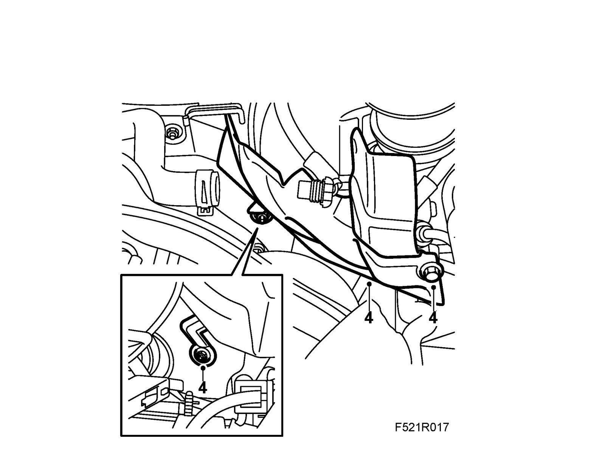
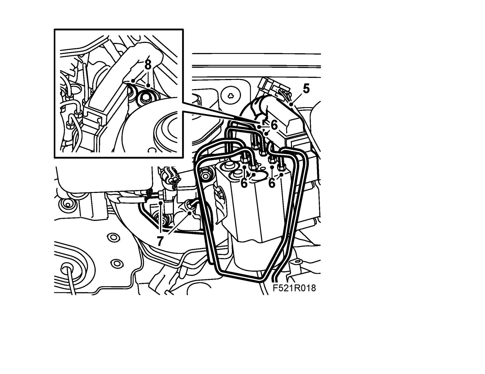
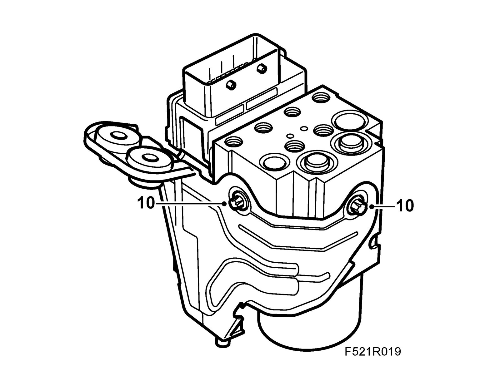
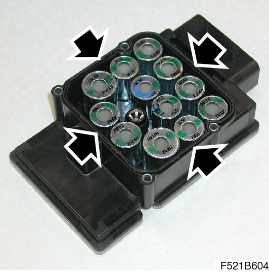
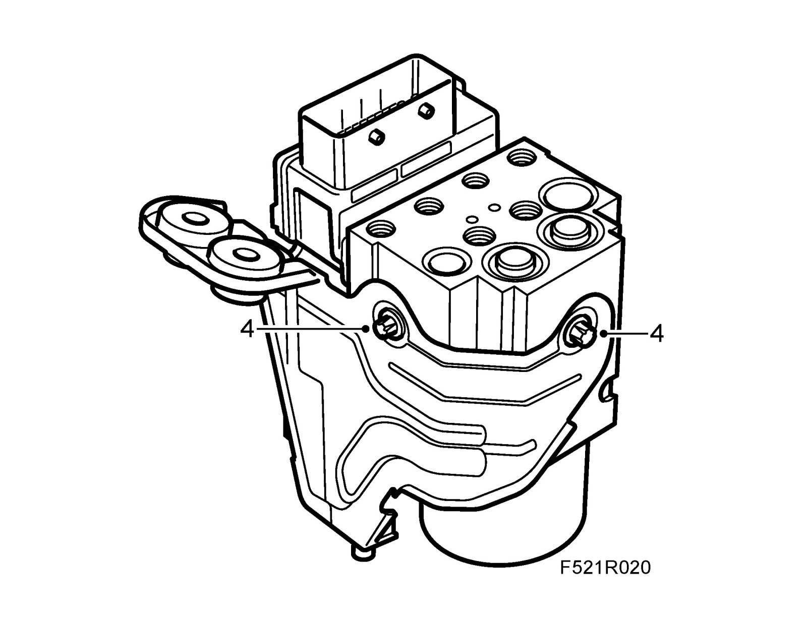
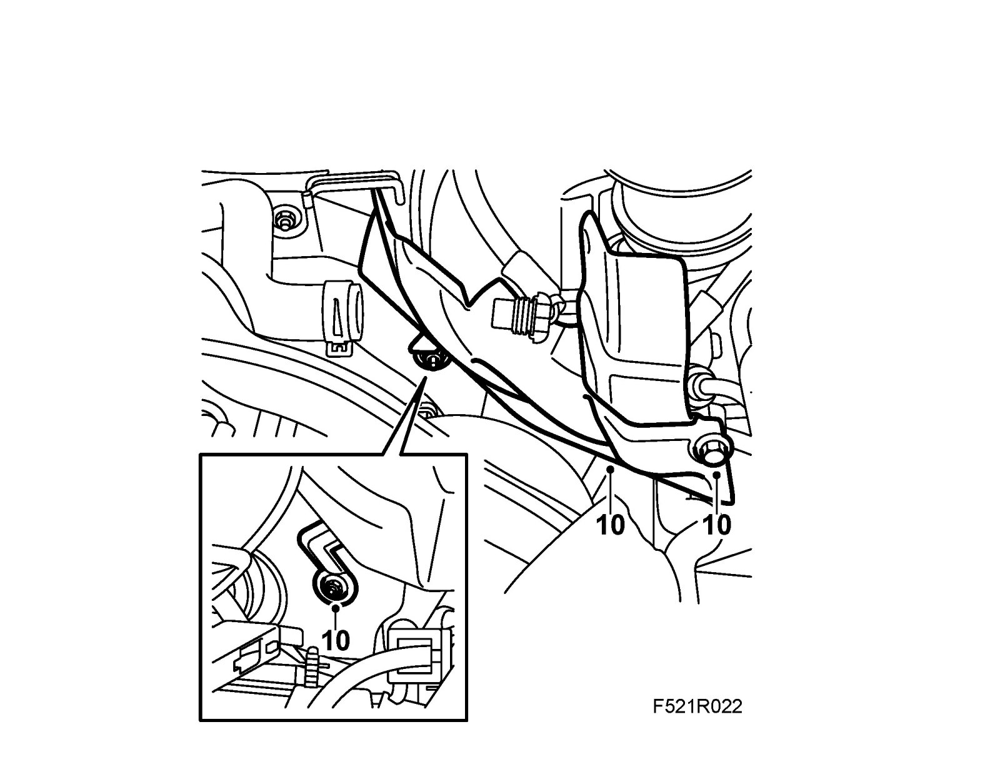

Hydraulic Unit, TCS/ESP, All Engines and Control Modules For B284 LHD
Hydraulic unit, TCS/ESP, all engines and control modules for B284 LHDImportant
ESD-SENSITIVE COMPONENT
Earth yourself by touching the car body before plugging in / unplugging components. Do not touch the component pins. Read Before removing a control module before changing a control module.
To remove
1. Put on 82 93 706 Wing cover.
2. Drain the brake system as described in changing brake fluid.
3. Remove the battery and bottom of battery cover.
4. B284 LHD: Remove the brake servo heat shield.

5. Separate the connector from the control module.
Important
Take care when releasing the locking mechanism on the connector so as not to damage the connector. Pull the halves straight apart to avoid bending the pins. For further information regarding connectors, refer to Connectors, handling and inspection.

6. Detach the brake pipes from the unit.
7. B284 LHD: Remove the brake pipes from the master cylinder.
8. Remove the bracket from the suspension strut tower.
9. Lift up the unit.
10. If changing the hydraulic unit/control module: Remove the bracket from the unit.

11. If changing the hydraulic unit/control module: Remove the bolts holding the control module to the hydraulic unit.
12. When changing the hydraulic unit/control module: Carefully pull the control module away from the hydraulic unit.
To fit
1. When changing hydraulic unit/control module: Make sure the gasket is situated in the groove in the control module.

2. When changing hydraulic unit/control module: Press the control module in place on the hydraulic unit.
3. When changing the hydraulic unit/control module: Fit the bolts.
Tightening torque 2.5 Nm (1.8 lbf ft)
Note
Tighten the bolt alternately.
4. If the hydraulic unit/control module is changed: Fit the bracket to the unit.
Tightening torque: 10 Nm (7.5 lbf ft)

5. Put the unit in place with the guide pin in the rubber bush.
6. Fit the bolts to the suspension strut tower.
Tightening torque 25 Nm (18 lbf ft)
7. Attach the brake pipes to the unit.
Tightening torque: 16 Nm (12 lbf ft)
8. B284 LHD: Fit the brake pips to the master cylinder.
9. Attach the connector to the control module.
10. B284 LHD: Fit the heat shield at the brake servo.

11. Fit the lower part of the battery cover and the battery.
12. Fill with brake fluid and bleed the brake system.
13. Perform the procedures after battery disconnection.
14. When changing control module: Perform Procedures after replacing a control module.